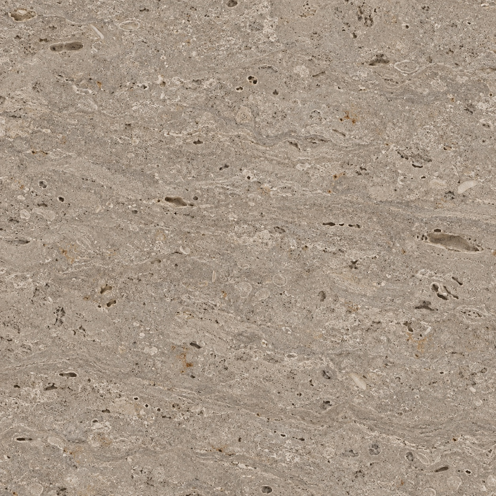
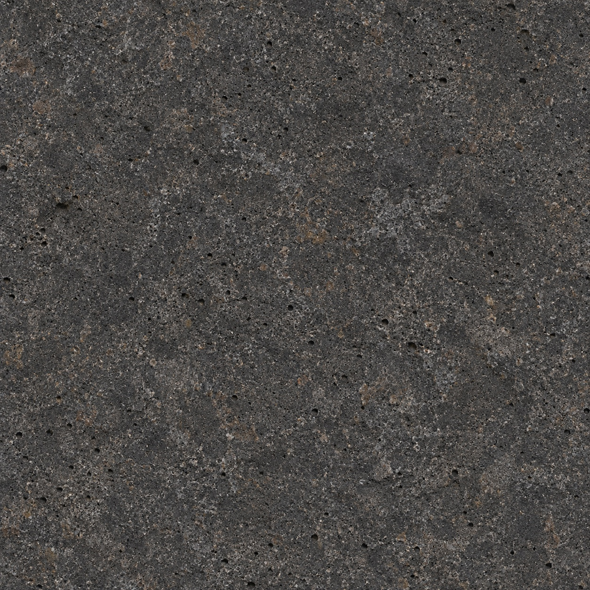
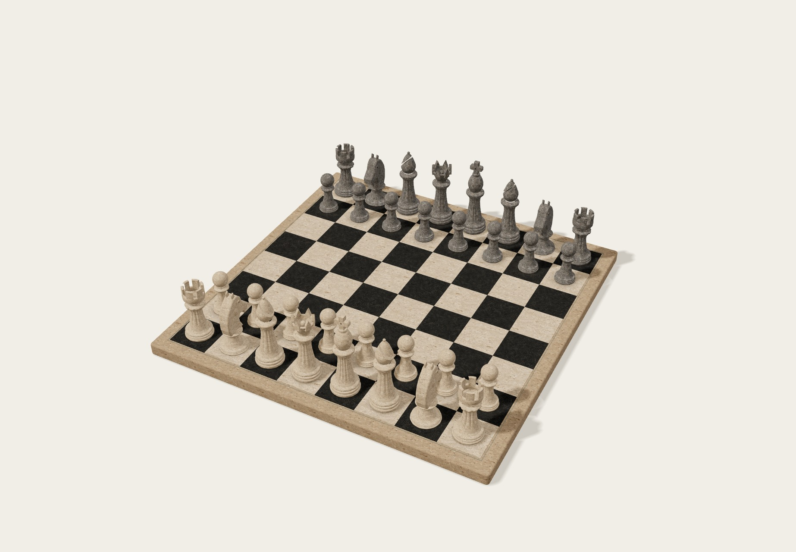

The opening collectionEvery move,
Every move,
tailored.
Carved with character. Made for your next move.
Choose a piece. Discover its collection.


The raw stone editionTravertine & charcoal basalt
32 pieces. The opening position.
The knight / Private fittings ↗

Stone, in its element. / Edition 02
Preparing the pieces…
Sixteen carved flutes. A stepped collar. A weathered cross with a recessed mason’s mark.
Explore Men ↗Drag to turn · Click a piece to explore